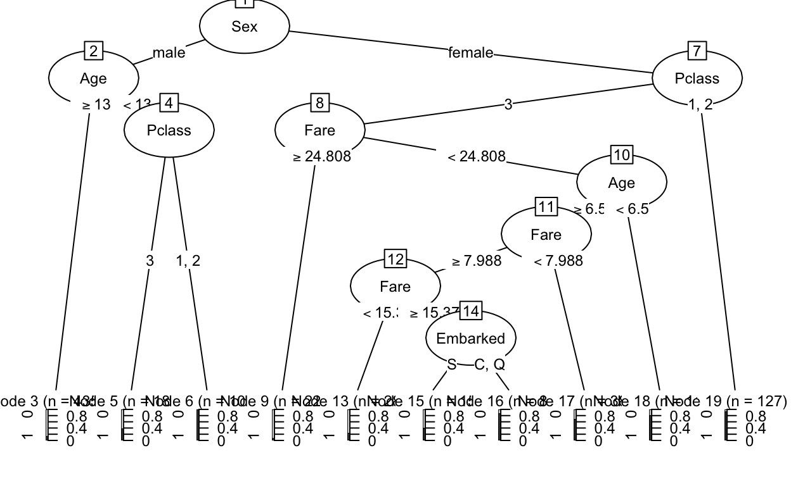
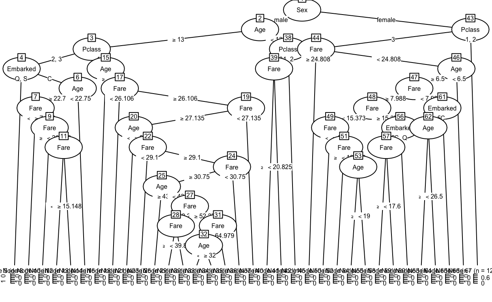
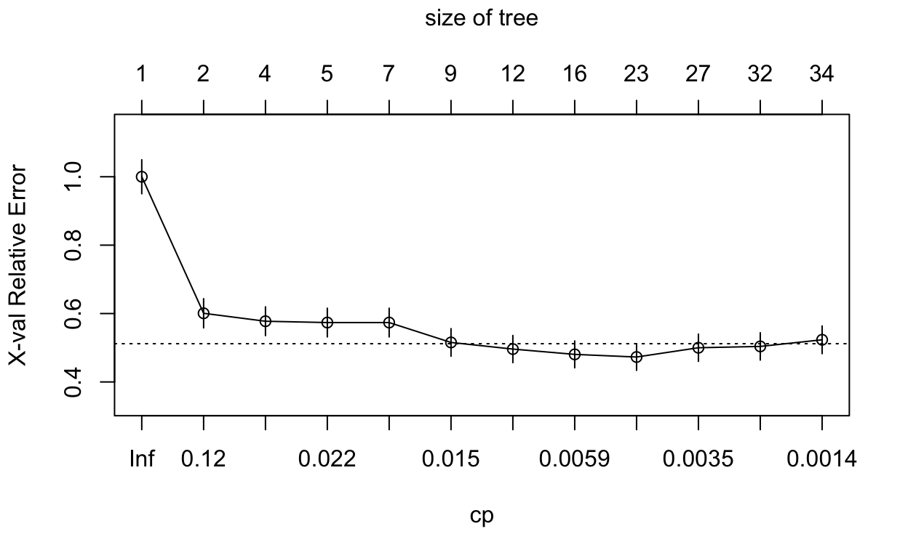

library(learnr)
library(titanic)
library(rpart)
library(partykit)
library(caret)
library(verification)In this notebook we use the Titanic data that is used on Kaggle (https://www.kaggle.com) as an introductory competition for getting familiar with machine learning. It includes information on a set of Titanic passengers, such as age, sex, ticket class and whether he or she survived the Titanic tragedy (Note that the titanic package also provides a separate test set that precludes the survival variable).
Source: https://www.kaggle.com/c/titanic/data
titanic <- titanic_train
str(titanic)## 'data.frame': 891 obs. of 12 variables:
## $ PassengerId: int 1 2 3 4 5 6 7 8 9 10 ...
## $ Survived : int 0 1 1 1 0 0 0 0 1 1 ...
## $ Pclass : int 3 1 3 1 3 3 1 3 3 2 ...
## $ Name : chr "Braund, Mr. Owen Harris" "Cumings, Mrs. John Bradley (Florence Briggs Thayer)" "Heikkinen, Miss. Laina" "Futrelle, Mrs. Jacques Heath (Lily May Peel)" ...
## $ Sex : chr "male" "female" "female" "female" ...
## $ Age : num 22 38 26 35 35 NA 54 2 27 14 ...
## $ SibSp : int 1 1 0 1 0 0 0 3 0 1 ...
## $ Parch : int 0 0 0 0 0 0 0 1 2 0 ...
## $ Ticket : chr "A/5 21171" "PC 17599" "STON/O2. 3101282" "113803" ...
## $ Fare : num 7.25 71.28 7.92 53.1 8.05 ...
## $ Cabin : chr "" "C85" "" "C123" ...
## $ Embarked : chr "S" "C" "S" "S" ...We begin with some minor data preparations. The lapply() function is a handy tool if the task is to apply the same transformation (e.g. as.factor()) to multiple columns of a data frame.
titanic[, c(2:3,5,12)] <- lapply(titanic[, c(2:3,5,12)], as.factor)Next we split the data into a training and a test part. This can be done by random sampling with sample.
set.seed(3225)
train <- sample(1:nrow(titanic), 0.8*nrow(titanic))
titanic_train <- titanic[train,]
titanic_test <- titanic[-train,]Our task is to predict survival status of the Titanic passengers. As a first attempt, we grow a classification tree with rpart, which follows the CART idea. Tree size is controlled by the default options (see ?rpart).
tree1 <- rpart(Survived ~ Pclass + Sex + Age + Fare + Embarked, data = titanic_train, method = "class")
tree1## n= 712
##
## node), split, n, loss, yval, (yprob)
## * denotes terminal node
##
## 1) root 712 258 0 (0.63764045 0.36235955)
## 2) Sex=male 463 82 0 (0.82289417 0.17710583)
## 4) Age>=13 435 65 0 (0.85057471 0.14942529) *
## 5) Age< 13 28 11 1 (0.39285714 0.60714286)
## 10) Pclass=3 18 7 0 (0.61111111 0.38888889) *
## 11) Pclass=1,2 10 0 1 (0.00000000 1.00000000) *
## 3) Sex=female 249 73 1 (0.29317269 0.70682731)
## 6) Pclass=3 122 57 0 (0.53278689 0.46721311)
## 12) Fare>=24.80835 22 2 0 (0.90909091 0.09090909) *
## 13) Fare< 24.80835 100 45 1 (0.45000000 0.55000000)
## 26) Age>=6.5 89 43 1 (0.48314607 0.51685393)
## 52) Fare>=7.9875 51 20 0 (0.60784314 0.39215686)
## 104) Fare< 15.3729 28 7 0 (0.75000000 0.25000000) *
## 105) Fare>=15.3729 23 10 1 (0.43478261 0.56521739)
## 210) Embarked=S 15 6 0 (0.60000000 0.40000000) *
## 211) Embarked=C,Q 8 1 1 (0.12500000 0.87500000) *
## 53) Fare< 7.9875 38 12 1 (0.31578947 0.68421053) *
## 27) Age< 6.5 11 2 1 (0.18181818 0.81818182) *
## 7) Pclass=1,2 127 8 1 (0.06299213 0.93700787) *In addition to just printing the tree structure, calling summary with the tree object gives us a lot of information on the grown tree.
summary(tree1)## Call:
## rpart(formula = Survived ~ Pclass + Sex + Age + Fare + Embarked,
## data = titanic_train, method = "class")
## n= 712
##
## CP nsplit rel error xerror xstd
## 1 0.39922481 0 1.0000000 1.0000000 0.04971393
## 2 0.03488372 1 0.6007752 0.6007752 0.04268092
## 3 0.02325581 3 0.5310078 0.6085271 0.04287821
## 4 0.02131783 4 0.5077519 0.5891473 0.04237953
## 5 0.01550388 6 0.4651163 0.5852713 0.04227759
## 6 0.01162791 7 0.4496124 0.5581395 0.04154279
## 7 0.01000000 9 0.4263566 0.5348837 0.04088234
##
## Variable importance
## Sex Fare Pclass Age Embarked
## 48 21 17 9 5
##
## Node number 1: 712 observations, complexity param=0.3992248
## predicted class=0 expected loss=0.3623596 P(node) =1
## class counts: 454 258
## probabilities: 0.638 0.362
## left son=2 (463 obs) right son=3 (249 obs)
## Primary splits:
## Sex splits as RL, improve=90.871040, (0 missing)
## Pclass splits as RRL, improve=30.175010, (0 missing)
## Fare < 10.825 to the left, improve=29.228740, (0 missing)
## Embarked splits as RRLL, improve= 9.497725, (0 missing)
## Age < 5.5 to the right, improve= 8.120005, (145 missing)
## Surrogate splits:
## Fare < 74.375 to the left, agree=0.681, adj=0.088, (0 split)
## Embarked splits as RLLL, agree=0.652, adj=0.004, (0 split)
##
## Node number 2: 463 observations, complexity param=0.02325581
## predicted class=0 expected loss=0.1771058 P(node) =0.6502809
## class counts: 381 82
## probabilities: 0.823 0.177
## left son=4 (435 obs) right son=5 (28 obs)
## Primary splits:
## Age < 13 to the right, improve=10.694630, (100 missing)
## Pclass splits as RLL, improve= 6.967520, (0 missing)
## Fare < 15.1729 to the left, improve= 6.510578, (0 missing)
## Embarked splits as -RLL, improve= 2.544722, (0 missing)
##
## Node number 3: 249 observations, complexity param=0.03488372
## predicted class=1 expected loss=0.2931727 P(node) =0.3497191
## class counts: 73 176
## probabilities: 0.293 0.707
## left son=6 (122 obs) right son=7 (127 obs)
## Primary splits:
## Pclass splits as RRL, improve=27.466960, (0 missing)
## Fare < 48.2 to the left, improve= 8.489882, (0 missing)
## Embarked splits as RRLL, improve= 2.705559, (0 missing)
## Age < 30.75 to the left, improve= 2.143791, (45 missing)
## Surrogate splits:
## Fare < 25.69795 to the left, agree=0.791, adj=0.574, (0 split)
## Embarked splits as RRLR, agree=0.610, adj=0.205, (0 split)
## Age < 22.5 to the left, agree=0.550, adj=0.082, (0 split)
##
## Node number 4: 435 observations
## predicted class=0 expected loss=0.1494253 P(node) =0.6109551
## class counts: 370 65
## probabilities: 0.851 0.149
##
## Node number 5: 28 observations, complexity param=0.01550388
## predicted class=1 expected loss=0.3928571 P(node) =0.03932584
## class counts: 11 17
## probabilities: 0.393 0.607
## left son=10 (18 obs) right son=11 (10 obs)
## Primary splits:
## Pclass splits as RRL, improve=4.801587, (0 missing)
## Fare < 20.825 to the right, improve=4.093985, (0 missing)
## Age < 3.5 to the right, improve=1.028938, (0 missing)
## Surrogate splits:
## Fare < 64.37915 to the left, agree=0.750, adj=0.3, (0 split)
## Age < 0.96 to the right, agree=0.714, adj=0.2, (0 split)
##
## Node number 6: 122 observations, complexity param=0.03488372
## predicted class=0 expected loss=0.4672131 P(node) =0.1713483
## class counts: 65 57
## probabilities: 0.533 0.467
## left son=12 (22 obs) right son=13 (100 obs)
## Primary splits:
## Fare < 24.80835 to the right, improve=7.601341, (0 missing)
## Embarked splits as -RRL, improve=5.049642, (0 missing)
## Age < 5.5 to the right, improve=2.609161, (37 missing)
##
## Node number 7: 127 observations
## predicted class=1 expected loss=0.06299213 P(node) =0.1783708
## class counts: 8 119
## probabilities: 0.063 0.937
##
## Node number 10: 18 observations
## predicted class=0 expected loss=0.3888889 P(node) =0.0252809
## class counts: 11 7
## probabilities: 0.611 0.389
##
## Node number 11: 10 observations
## predicted class=1 expected loss=0 P(node) =0.01404494
## class counts: 0 10
## probabilities: 0.000 1.000
##
## Node number 12: 22 observations
## predicted class=0 expected loss=0.09090909 P(node) =0.03089888
## class counts: 20 2
## probabilities: 0.909 0.091
##
## Node number 13: 100 observations, complexity param=0.02131783
## predicted class=1 expected loss=0.45 P(node) =0.1404494
## class counts: 45 55
## probabilities: 0.450 0.550
## left son=26 (89 obs) right son=27 (11 obs)
## Primary splits:
## Age < 6.5 to the right, improve=2.530371, (31 missing)
## Fare < 7.9875 to the right, improve=2.207980, (0 missing)
## Embarked splits as -RRL, improve=2.129466, (0 missing)
##
## Node number 26: 89 observations, complexity param=0.02131783
## predicted class=1 expected loss=0.4831461 P(node) =0.125
## class counts: 43 46
## probabilities: 0.483 0.517
## left son=52 (51 obs) right son=53 (38 obs)
## Primary splits:
## Fare < 7.9875 to the right, improve=3.7146600, (0 missing)
## Embarked splits as -LRL, improve=2.7063080, (0 missing)
## Age < 27.5 to the right, improve=0.6896552, (31 missing)
## Surrogate splits:
## Embarked splits as -LRL, agree=0.719, adj=0.342, (0 split)
##
## Node number 27: 11 observations
## predicted class=1 expected loss=0.1818182 P(node) =0.01544944
## class counts: 2 9
## probabilities: 0.182 0.818
##
## Node number 52: 51 observations, complexity param=0.01162791
## predicted class=0 expected loss=0.3921569 P(node) =0.07162921
## class counts: 31 20
## probabilities: 0.608 0.392
## left son=104 (28 obs) right son=105 (23 obs)
## Primary splits:
## Fare < 15.3729 to the left, improve=2.509378, (0 missing)
## Embarked splits as -LRL, improve=1.683855, (0 missing)
## Age < 23 to the left, improve=1.405950, (13 missing)
## Surrogate splits:
## Embarked splits as -LRL, agree=0.647, adj=0.217, (0 split)
##
## Node number 53: 38 observations
## predicted class=1 expected loss=0.3157895 P(node) =0.05337079
## class counts: 12 26
## probabilities: 0.316 0.684
##
## Node number 104: 28 observations
## predicted class=0 expected loss=0.25 P(node) =0.03932584
## class counts: 21 7
## probabilities: 0.750 0.250
##
## Node number 105: 23 observations, complexity param=0.01162791
## predicted class=1 expected loss=0.4347826 P(node) =0.03230337
## class counts: 10 13
## probabilities: 0.435 0.565
## left son=210 (15 obs) right son=211 (8 obs)
## Primary splits:
## Embarked splits as -RRL, improve=2.3543480, (0 missing)
## Fare < 17.6 to the right, improve=1.3360940, (0 missing)
## Age < 30 to the left, improve=0.4464286, (7 missing)
## Surrogate splits:
## Fare < 15.675 to the right, agree=0.826, adj=0.5, (0 split)
##
## Node number 210: 15 observations
## predicted class=0 expected loss=0.4 P(node) =0.02106742
## class counts: 9 6
## probabilities: 0.600 0.400
##
## Node number 211: 8 observations
## predicted class=1 expected loss=0.125 P(node) =0.01123596
## class counts: 1 7
## probabilities: 0.125 0.875Of course, trees are (usually) best represented by a plot. Here we use the partykit package to first convert the tree into the party format and then use plot on the new object.
party_tree1 <- as.party(tree1)
plot(party_tree1, gp = gpar(fontsize = 9))
Lets build a larger tree.
tree2 <- rpart(Survived ~ Pclass + Sex + Age + Fare + Embarked, data = titanic_train,
control = rpart.control(minsplit = 10, # minimal obs in a node
minbucket = 3, # minimal obs in any terminal node
cp = 0.001, # min improvement through splitting
maxdepth = 30 # maximum tree depth
))Unfortunately, this new tree might be too large to plot.
party_tree2 <- as.party(tree2)
plot(party_tree2, gp = gpar(fontsize = 6))
This large tree is likely to overfit and will not generalize well to new data. Therefore, we use printcp and plotcp that help us to determine the best subtree. Root node error times xerror gives us the estimated test error for each subtree based on cross-validation.
printcp(tree2)##
## Classification tree:
## rpart(formula = Survived ~ Pclass + Sex + Age + Fare + Embarked,
## data = titanic_train, control = rpart.control(minsplit = 10,
## minbucket = 3, cp = 0.001, maxdepth = 30))
##
## Variables actually used in tree construction:
## [1] Age Embarked Fare Pclass Sex
##
## Root node error: 258/712 = 0.36236
##
## n= 712
##
## CP nsplit rel error xerror xstd
## 1 0.3992248 0 1.00000 1.00000 0.049714
## 2 0.0348837 1 0.60078 0.60078 0.042681
## 3 0.0232558 3 0.53101 0.57752 0.042071
## 4 0.0213178 4 0.50775 0.57364 0.041967
## 5 0.0193798 6 0.46512 0.57364 0.041967
## 6 0.0116279 8 0.42636 0.51550 0.040309
## 7 0.0067829 11 0.39147 0.49612 0.039715
## 8 0.0051680 15 0.36434 0.48062 0.039223
## 9 0.0038760 22 0.31783 0.47287 0.038971
## 10 0.0031008 26 0.30233 0.50000 0.039835
## 11 0.0019380 31 0.28682 0.50388 0.039955
## 12 0.0010000 33 0.28295 0.52326 0.040541plotcp(tree2)
On this basis, we are interested in picking the cp value that is associated with the smallest CV error. We could do this by hand or by using a few simple lines of code.
minx <- which.min(tree2$cptable[,"xerror"])
mincp <- tree2$cptable[minx,"CP"]
mincp## [1] 0.003875969Alternatively, we could also pick the best subtree based on the 1-SE rule. We are again interested in storing the corresponding cp value for tree pruning in the next step.
minx <- which.min(tree2$cptable[,"xerror"])
minxse <- tree2$cptable[minx,"xerror"] + tree2$cptable[minx,"xstd"]
minse <- which(tree2$cptable[1:minx,"xerror"] < minxse)
mincp2 <- tree2$cptable[minse[1],"CP"]
mincp2## [1] 0.006782946Now we can get the best subtree with the prune function. First based on the smallest CV error…
p_tree <- prune(tree2, cp = mincp)
p_tree## n= 712
##
## node), split, n, loss, yval, (yprob)
## * denotes terminal node
##
## 1) root 712 258 0 (0.63764045 0.36235955)
## 2) Sex=male 463 82 0 (0.82289417 0.17710583)
## 4) Age>=13 435 65 0 (0.85057471 0.14942529)
## 8) Pclass=2,3 339 34 0 (0.89970501 0.10029499) *
## 9) Pclass=1 96 31 0 (0.67708333 0.32291667)
## 18) Age>=53 17 1 0 (0.94117647 0.05882353) *
## 19) Age< 53 79 30 0 (0.62025316 0.37974684)
## 38) Fare< 26.10625 8 0 0 (1.00000000 0.00000000) *
## 39) Fare>=26.10625 71 30 0 (0.57746479 0.42253521)
## 78) Fare>=27.1354 62 22 0 (0.64516129 0.35483871)
## 156) Age< 22.5 5 0 0 (1.00000000 0.00000000) *
## 157) Age>=22.5 57 22 0 (0.61403509 0.38596491)
## 314) Fare< 29.1 5 0 0 (1.00000000 0.00000000) *
## 315) Fare>=29.1 52 22 0 (0.57692308 0.42307692)
## 630) Fare>=30.75 44 16 0 (0.63636364 0.36363636)
## 1260) Age>=43 16 4 0 (0.75000000 0.25000000) *
## 1261) Age< 43 28 12 0 (0.57142857 0.42857143)
## 2522) Fare< 52.2771 10 2 0 (0.80000000 0.20000000) *
## 2523) Fare>=52.2771 18 8 1 (0.44444444 0.55555556)
## 5046) Fare>=64.97915 13 5 0 (0.61538462 0.38461538)
## 10092) Age< 32 8 1 0 (0.87500000 0.12500000) *
## 10093) Age>=32 5 1 1 (0.20000000 0.80000000) *
## 5047) Fare< 64.97915 5 0 1 (0.00000000 1.00000000) *
## 631) Fare< 30.75 8 2 1 (0.25000000 0.75000000) *
## 79) Fare< 27.1354 9 1 1 (0.11111111 0.88888889) *
## 5) Age< 13 28 11 1 (0.39285714 0.60714286)
## 10) Pclass=3 18 7 0 (0.61111111 0.38888889)
## 20) Fare>=20.825 12 1 0 (0.91666667 0.08333333) *
## 21) Fare< 20.825 6 0 1 (0.00000000 1.00000000) *
## 11) Pclass=1,2 10 0 1 (0.00000000 1.00000000) *
## 3) Sex=female 249 73 1 (0.29317269 0.70682731)
## 6) Pclass=3 122 57 0 (0.53278689 0.46721311)
## 12) Fare>=24.80835 22 2 0 (0.90909091 0.09090909) *
## 13) Fare< 24.80835 100 45 1 (0.45000000 0.55000000)
## 26) Age>=6.5 89 43 1 (0.48314607 0.51685393)
## 52) Fare>=7.9875 51 20 0 (0.60784314 0.39215686)
## 104) Fare< 15.3729 28 7 0 (0.75000000 0.25000000) *
## 105) Fare>=15.3729 23 10 1 (0.43478261 0.56521739)
## 210) Embarked=S 15 6 0 (0.60000000 0.40000000)
## 420) Fare>=17.6 10 2 0 (0.80000000 0.20000000) *
## 421) Fare< 17.6 5 1 1 (0.20000000 0.80000000) *
## 211) Embarked=C,Q 8 1 1 (0.12500000 0.87500000) *
## 53) Fare< 7.9875 38 12 1 (0.31578947 0.68421053) *
## 27) Age< 6.5 11 2 1 (0.18181818 0.81818182) *
## 7) Pclass=1,2 127 8 1 (0.06299213 0.93700787) *…and now based on the 1-SE rule.
p_tree2 <- prune(tree2, cp = mincp2)
p_tree2## n= 712
##
## node), split, n, loss, yval, (yprob)
## * denotes terminal node
##
## 1) root 712 258 0 (0.63764045 0.36235955)
## 2) Sex=male 463 82 0 (0.82289417 0.17710583)
## 4) Age>=13 435 65 0 (0.85057471 0.14942529) *
## 5) Age< 13 28 11 1 (0.39285714 0.60714286)
## 10) Pclass=3 18 7 0 (0.61111111 0.38888889)
## 20) Fare>=20.825 12 1 0 (0.91666667 0.08333333) *
## 21) Fare< 20.825 6 0 1 (0.00000000 1.00000000) *
## 11) Pclass=1,2 10 0 1 (0.00000000 1.00000000) *
## 3) Sex=female 249 73 1 (0.29317269 0.70682731)
## 6) Pclass=3 122 57 0 (0.53278689 0.46721311)
## 12) Fare>=24.80835 22 2 0 (0.90909091 0.09090909) *
## 13) Fare< 24.80835 100 45 1 (0.45000000 0.55000000)
## 26) Age>=6.5 89 43 1 (0.48314607 0.51685393)
## 52) Fare>=7.9875 51 20 0 (0.60784314 0.39215686)
## 104) Fare< 15.3729 28 7 0 (0.75000000 0.25000000) *
## 105) Fare>=15.3729 23 10 1 (0.43478261 0.56521739)
## 210) Embarked=S 15 6 0 (0.60000000 0.40000000)
## 420) Fare>=17.6 10 2 0 (0.80000000 0.20000000) *
## 421) Fare< 17.6 5 1 1 (0.20000000 0.80000000) *
## 211) Embarked=C,Q 8 1 1 (0.12500000 0.87500000) *
## 53) Fare< 7.9875 38 12 1 (0.31578947 0.68421053) *
## 27) Age< 6.5 11 2 1 (0.18181818 0.81818182) *
## 7) Pclass=1,2 127 8 1 (0.06299213 0.93700787) *Finally, we can use the pruned tree in order to predict the outcome in the holdout (test) set. Prediction performance can be evaluated with confusionMatrix from caret.
y_tree <- predict(p_tree, newdata = titanic_test, type = "class")
y_tree2 <- predict(p_tree2, newdata = titanic_test, type = "class")
confusionMatrix(y_tree, titanic_test$Survived, mode = "everything", positive = "1")## Confusion Matrix and Statistics
##
## Reference
## Prediction 0 1
## 0 86 22
## 1 9 62
##
## Accuracy : 0.8268
## 95% CI : (0.7633, 0.8792)
## No Information Rate : 0.5307
## P-Value [Acc > NIR] : < 2e-16
##
## Kappa : 0.6492
##
## Mcnemar's Test P-Value : 0.03114
##
## Sensitivity : 0.7381
## Specificity : 0.9053
## Pos Pred Value : 0.8732
## Neg Pred Value : 0.7963
## Precision : 0.8732
## Recall : 0.7381
## F1 : 0.8000
## Prevalence : 0.4693
## Detection Rate : 0.3464
## Detection Prevalence : 0.3966
## Balanced Accuracy : 0.8217
##
## 'Positive' Class : 1
## confusionMatrix(y_tree2, titanic_test$Survived, mode = "everything", positive = "1")## Confusion Matrix and Statistics
##
## Reference
## Prediction 0 1
## 0 90 27
## 1 5 57
##
## Accuracy : 0.8212
## 95% CI : (0.7571, 0.8744)
## No Information Rate : 0.5307
## P-Value [Acc > NIR] : 3.564e-16
##
## Kappa : 0.6356
##
## Mcnemar's Test P-Value : 0.0002054
##
## Sensitivity : 0.6786
## Specificity : 0.9474
## Pos Pred Value : 0.9194
## Neg Pred Value : 0.7692
## Precision : 0.9194
## Recall : 0.6786
## F1 : 0.7808
## Prevalence : 0.4693
## Detection Rate : 0.3184
## Detection Prevalence : 0.3464
## Balanced Accuracy : 0.8130
##
## 'Positive' Class : 1
## We can also predict probabilities instead of class membership.
yp_tree <- predict(p_tree, newdata = titanic_test, type = "prob")[,2]
prob <- verify(pred = yp_tree, obs = as.numeric(as.character(titanic_test$Survived)), frcst.type = "prob", obs.type = "binary" )## If baseline is not included, baseline values will be calculated from the sample obs.summary(prob)##
## The forecasts are probabilistic, the observations are binary.
## Sample baseline calculated from observations.
## Brier Score (BS) = 0.137
## Brier Score - Baseline = 0.2491
## Skill Score = 0.4498
## Reliability = 0.008855
## Resolution = 0.1209
## Uncertainty = 0.2491